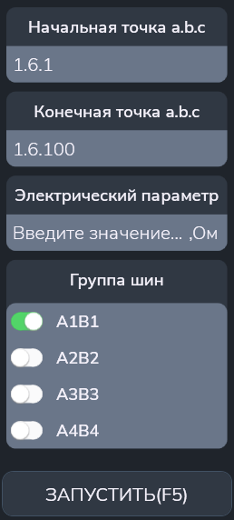

Сопротивление коммутатора
Тест предназначен для контроля сопротивлений контактов коммутатора.
Сначала появляется меню (см. рисунок 1):

Параметры
- "Начальная точка a.b.c" и "Конечная точка a.b.c" - начальный и конечный адреса диапазона проверяемых точек;
- "Электрический параметр" - задание порогового значения сопротивления (в Ом);
- "Группа шин" - выбор группы шин, на которых будет производиться проверка.
Алгоритм проверки
Подготовка:
- Модулю коммутации реле (МКР) подключается к выбранной паре шин.
- Мультиметр переводится в режим измерения сопротивления.
- Устройство коммутации шин (УКШ) подключает мультиметр к выбранной паре шин.
Для каждой проверяемой точки выполняются действия:
- Подключаем текущую точку к выбранным шинам.
- Измеряем сопротивление с помощью мультимтера.
- Выдаем результат измерения в протокол.
- Отключаем текущую точку от выбранных шин.